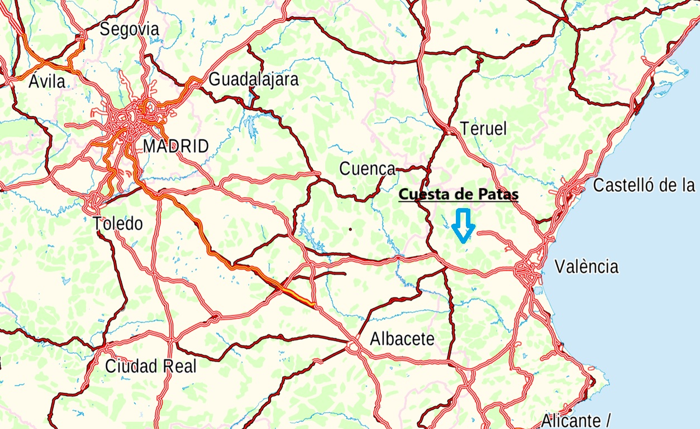
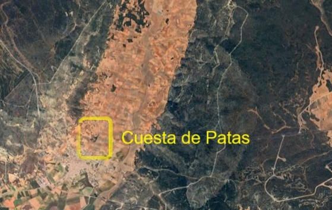
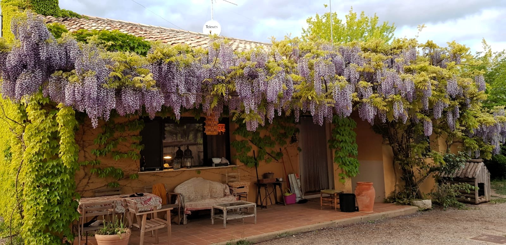
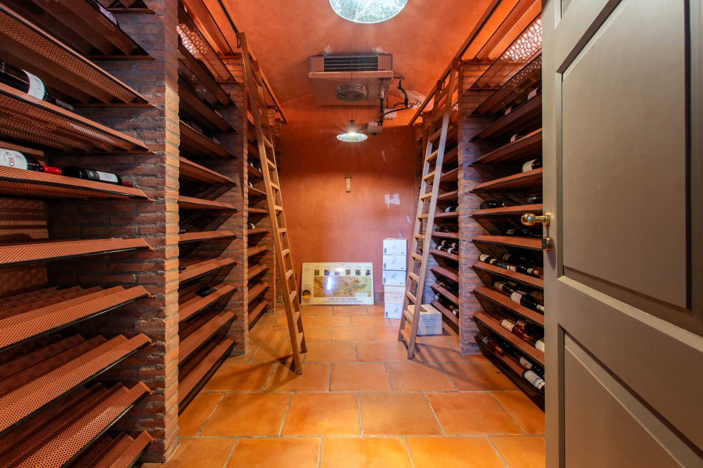
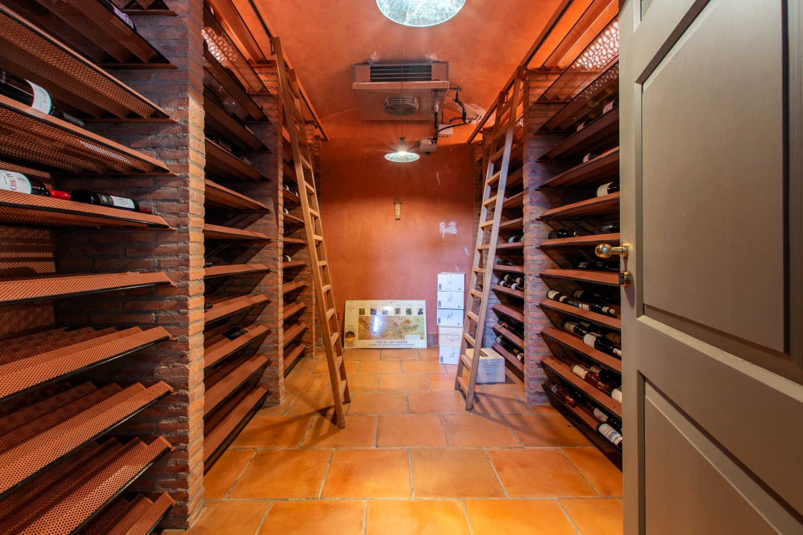

Features
Características
Conoce nuestras características



- This exquisite luxury residence located in Campillo de Altobuey, Cuenca (Spain) nestles on nearly 7 hectares of land. OƯering endless possibilities, this stunning estate is a blank canvas for your dream lifestyle. A two-hour drive from Spain’s capital city, Madrid, a one hour drive from Valencia (beach coast & pleasant weather) and half an hour from Cuenca's High-Speed Train station.
Location of Cuesta de Patas Luxury Estate between Madrid and Valencia
.png)
- Expansive and luminous spaces: Over 1500m² of built space featuring high-quality finishes. The color palette has been carefully chosen to blend seamlessly with the natural surroundings.
- Luxurious amenities: 5 spacious bedrooms (40m²) and a 70m² master suite, each with a kingsized bed, ensuite bathroom with hydro-massage tub, and breathtaking countryside views. Additional features include a living room, oƯices, indoor heated pool, sauna, steam room, gym, cinema room, temperature-controlled wine cellar, and a rustic kitchen with a fireplace for roasting.
- Comfort and functionality: A three-story elevator, oversized fireplaces, panoramic views, and premium finishes. The environment promotes relaxation, rejuvenation, and allows to be disconnected from the fast-paced world.
The Estate is a Breathtaking Luxury Residence
.png)
- Certified organic food production: A nearly 3-hectare irrigated orchard cultivated and vegetable gardens, using sustainable practices, organic seeds, and no harmful chemicals. A farm where animals roam freely and are fed on a healthy diet from the organic crops. Fruit trees, olive groves, vineyards, and much more.
- Sustainability: A 50kw emergency generator, private well, eco-friendly agricultural practices, and quality certification.
- Nature and wellness: 30,000m² of ecologically maintained gardens, a riding arena with river sand, a 6-stall horse stable (expandable to 12), a caretaker's house, and a large 300m² storage barn.
A Self-Sufficient and Eco-Friendly Estate

- Tranquility and privacy: Surrounded by a peaceful natural environment, this is a perfect location for those desiring a peaceful environment. With beautiful surroundings: rivers, forests, waterfalls...
- Investment opportunities: Ideal as a luxury family home; previously operated as a rural hotel with a food license (3 spikes), oƯering potential for expansion to set up guest cottages at the surroundings or for a bed and breakfast. Other possibilities include a wellness retreat, co-living space, an event venue, an educational center or even a horse riding center.
- El Molinillo Reserve: An exceptional hunting estate spanning over 300 hectares is available nearby, offering an unparalleled opportunity for hunting enthusiasts. Contact us for further details.
A Unique Setting and Investment Potential
Gallery of photos
Galería de fotos
Explora nuestras imágenes exclusivas


Imágenes exteriores
Exterior images
Explora las vistas impresionantes de los exteriores


×
Imágenes interiores
Interior images
Descubre los detalles hermosos de los interiores


 



Coto El Molinillo
El Molinillo Reserve
Explora las vistas impresionantes de El Molinillo


- El Molinillo is a pristine open range reserve of 336 acres, with untouched wilderness. Ravines, cliffs, natural springs, river bordering the property. It has a small game hunting license permit with authorization for big game: wild boar, roe deer, mouflon, red deer (during hunting season). The stone cabin has been recently restored and equipped. With no hunting activity for the last 15 years, the estate boasts a truly unspoiled environment, making it a hunter's paradise